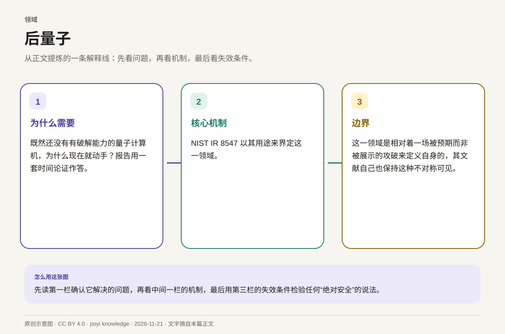

原理与机制
领域：后量子（Post-Quantum）。NIST IR 8547 以其用途来界定这一领域。报告在 nist-ir8547-final.txt:202-203 先承认悬而未决的问题：「future quantum computing may be able to break these algorithms, rendering data and information vulnerable」（未来的量子计算可能攻破这些算法，使数据与信息安全暴露于风险）；随后在 203-205 行给出应对的定义：「Countering this future quantum capability requires new cryptographic methods that can protect data from both current conventional computers and the quantum computers of tomorrow.」（要对抗这种未来的量子能力，就需要既能抵御当今经典计算机、也能抵御未来量子计算机的新技术），并且 「These methods are referred to as post-quantum cryptography (PQC).」（这些方法被称为后量子密码（PQC））。这个定义里有两处承重。其一，要求是双重的：PQC 必须扛住今天的经典攻击，而不只是假想的量子攻击。其二，通篇的限定语在认识上是留有余地的：文中所说的能力是一种未来的可能性，报告自己在 216-217 行也指出这场迁移开始于具有破解能力的量子计算机建成之前。在这些文件里，后量子指称的是面向那个未来的设计立场，而不是威胁已经到来的断言。

为什么重要
既然还没有有破解能力的量子计算机，为什么现在就动手？报告用一套时间论证作答。风险长寿：「Since sensitive data often retains its value for many years, starting the transition to post-quantum cryptography now is critical to preventing these future breaches.」（敏感数据往往多年后仍有价值，现在就开始向后量子密码迁移，对防止未来的泄露至关重要）（nist-ir8547-final.txt:219-221）。源文件自带引号点名的对手行为（第 218 行）：加密数据会在 「harvest now, decrypt later」（现在收获、日后解密） 策略下被先行收集，而 「This threat model is one of the main reasons why the transition to post-quantum cryptography is urgent.」（这一威胁模型正是迁移刻不容缓的主因之一）。迁移耗时：「Historically, the journey from algorithm standardization to full integration into information systems can take 10 to 20 years.」（历史上，从算法标准化到完全集成进信息系统可能需要 10 到 20 年）（210-211 行）。形式框架是报告在 506-509 行转述的 Mosca 定理——若数据需保密 X 年、迁移需 Y 年，则必须在 X + Y 超过量子突破预期时间 Z 之前行动，即 「organizations must start transitioning to post-quantum algorithms before X + Y exceeds the」（各组织必须在 X+Y 超过预期时间 Z 之前开始后量子迁移），否则数据将 「exposed once quantum computers become operational in the future」（在未来量子计算机投入运行时被暴露）（引文保留报告原行的换行拼合形态）。报告还在 520-521 行指出：签名算法虽不受收获-解密攻击之害，但出于协调规模的原因同样需要尽早迁移。
应用与实例
用途由标准自己记录。FIPS 203（按其第 13 行于 2024 年 8 月 13 日发布）在 fips203.txt:28 给出了第一个标准化主力算法的功能位置：「A shared secret key that is securely established using a KEM can then be used with symmetric-key cryptographic algorithms to perform basic tasks in secure communications, such as encryption and authentication.」（用 KEM 安全建立的共享密钥可再与对称密钥算法配合，完成加密与认证等安全通信基本任务），以及 「This standard specifies a key-encapsulation mechanism called ML-KEM.」（本标准规定了一个称为 ML-KEM 的密钥封装机制）。它声明的依据是格问题的困难性而非被证明的安全性：「The security of ML-KEM is related to the computational difficulty of the Module Learning with Errors problem.At present, ML-KEM is believed to be secure, even against adversaries who possess a quantum computer.」（ML-KEM 的安全性关联于带错误模学习问题的计算困难性；就目前而言，ML-KEM 被认为即使面对拥有量子计算机的对手也是安全的）（同一行）。替代关系在 fips203.txt:354 说得很明白：「The key establishment schemes specified in SP 800-56A and SP 800-56B are vulnerable to attacks that use sufficiently-capable quantum computers.ML-KEM is an approved alternative that is presently believed to be secure, even against adversaries in possession of a large-scale fault-tolerant quantum computer.」（SP 800-56A 与 SP 800-56B 规定的密钥建立方案易受足够强大的量子计算机攻击；ML-KEM 是获批准的替代方案，目前被认为即便对手持有大规模容错量子计算机也安全）。参数化带着明确的安全裕量-性能排序（第 28 行）：「In order of increasing security strength and decreasing performance, these are ML-KEM-512, ML-KEM-768, and ML-KEM-1024.」（按安全强度递增、性能递减排序为 ML-KEM-512、ML-KEM-768、ML-KEM-1024）。除三项算法标准之外（IR 8547 第 207-210 行记录 NIST 已发布三项 PQC 标准），部署指导把混合/复合方案视为实际使用的一部分；IR 8547 第 943-944 行记录：写作之时 ML-KEM 是唯一获批的后量子密钥建立方案，并推荐 ML-KEM-768 为默认参数集。
边界与攻击面
这一领域是相对着一场被预期而非被展示的攻破来定义自身的，其文献自己也保持这种不对称可见。处于风险中的是什么，三份 FIPS 的前言几乎逐字相同；FIPS 205 印在 fips205.txt:279：「The security of many commonly used public-key cryptosystems will be at risk if large-scale quantum computers are ever realized.」（一旦大规模量子计算机成为现实，许多常用公钥密码体制的安全将处于风险之中）——即原理一节所引那行的上一句，回指的是同段点名的基于整数分解与离散对数的体制。替代方案给出的同样是设计意图与假设，而非定理：SLH-DSA 「relies on the presumed difficulty of finding preimages for hash functions as well as several related properties of the same hash functions」（依赖的是寻找哈希原像的假定困难性以及同一哈希函数的若干相关性质）（fips205.txt:276），同句继续说 「Unlike the algorithms specified in FIPS 186-5 [1], SLH-DSA is designed to provide resistance against attacks from a large-scale quantum computer.」（与 FIPS 186-5 规定的算法不同，SLH-DSA 的设计目标就是抵御大规模量子计算机的攻击）——designed 是标准自己的动词。量尺本身也坦承是粗的：NIST IR 8547 在 nist-ir8547-final.txt:797-799 记录，对后量子密码体制安全强度的任何估计都存在重大不确定性，原因恰恰是未来量子计算机的成本、速度、内存规模等性能特征无法准确预测。这四份留存文件里没有任何关于 ML-KEM、ML-DSA 或 SLH-DSA 被新密码分析攻破的记载，本文也不作此类断言。
历史与背景
留存文本印出的可定年历史是标准化时间线，FIPS 204 把它写得相当紧凑。过程起点，fips204.txt:247：「in 2016, NIST initiated a public Post-Quantum Cryptography (PQC) Standardization process」（2016 年，NIST 启动公开的向后量子密码标准化过程），同一行还有 「A total of 82 candidate algorithms were submitted to NIST for consideration.」（共有 82 个候选算法提交给 NIST 评审）。遴选结果，fips204.txt:248：「After three rounds of evaluation and analysis, NIST selected the first four algorithms for standardization.」（经过三轮评估与分析，NIST 选出了首批四项待标准化算法），以及 「ML-DSA is derived from one of the selected schemes, CRYSTALS-DILITHIUM」（ML-DSA derived 自入选方案之一的 CRYSTALS-DILITHIUM）——被标准化的对象点名了它的前身提交方案。第 244 行的获批句式把规范与其问题基础绑定：「The digital signature scheme approved in this standard is the Module-Lattice-Based Digital Signature Algorithm (ML-DSA), which is based on the Module Learning With Errors problem」（本标准批准的数字签名体制是模格基数字签名算法 ML-DSA，其基础是带错误模学习问题）。发布日期印在扉页：「Published August 13, 2024」（2024 年 8 月 13 日发布）（fips204.txt:13；姊妹文件 fips203.txt:13 与 fips205.txt:12 印着同一日期，后者在 Published 后多一个冒号）。迁移报告在 nist-ir8547-final.txt:67 另给自己的日期：NIST 编辑评审委员会于 2026-10-21 批准。给评审者的两点提示：引文所在段落里有部分连字符词被抽取损坏（出现了 quantumresistant、CRYSTALSDILITHIUM 这类形态，故本文只标记字形存活的连续文段）；这四份文件没有一处说明谁最早提出后量子密码或起于何年——本文的历史断言止步于它们确实印出的过程时间线。
逐步示例与核验
范围模型
列出属于该条目的代表实体、相邻实体、时间断点与跨域关系；范围外对象不并入。
参考出处
- Wikipedia search entry for 后量子. https://zh.wikipedia.org/w/index.php?search=%E5%90%8E%E9%87%8F%E5%AD%90
- A Brief History of Cryptology and Cryptographic Algorithms (Dooley, Springer 2013). https://link.springer.com/book/10.1007/978-3-319-01628-3